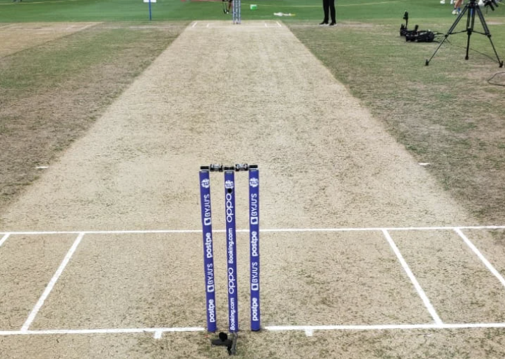
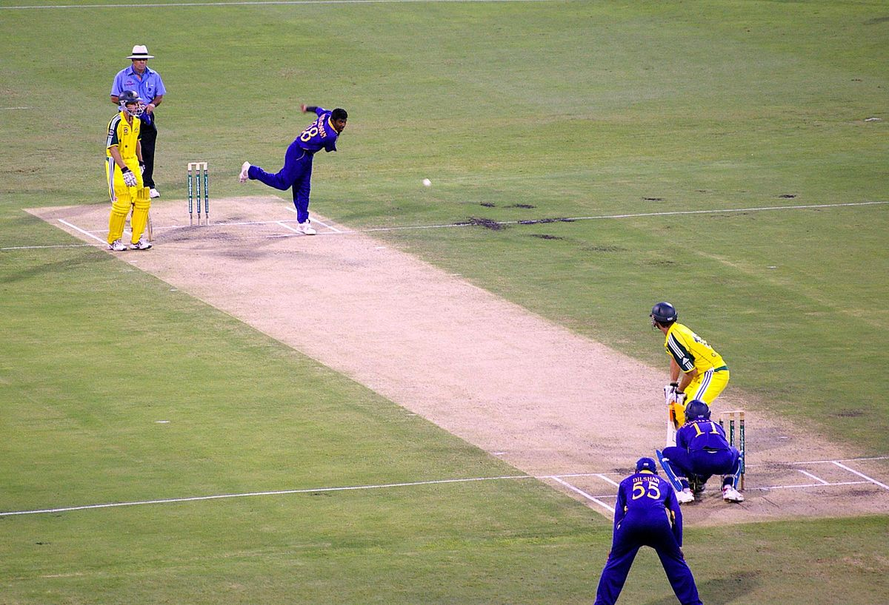
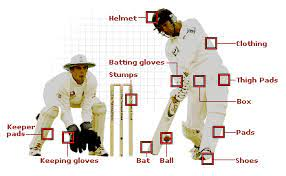

Cricket is a sport that is loved by billions of people throughout the world. This is a sport that is played everywhere in the world, from massive stadiums to small streets. No matter if you're a spectator or a participant, cricket has a way to keep the audience engaged. Australia, India and England are known as the cricketing giants. These three teams rule the cricket world. Not only do they have a rich history, but they also have a bright future ahead as they have been performing consistently at the top level.

The shape of the ground is an oval. There isn't any fixed diameter for a cricket field, but many international fields are around 140-150 meters and for womens it is set to be around 110-130 meters . The boundary is a circle which is shaped like the cricket field itself. The boundary line is made up of soft triangular prisms which shelters the rope which is set underneath. The batsmen's aim is to hit the ball over the boundaries or towards the boundary. The most famous and biggest stadium is the Narendra Modi Stadium. This is named after the PM of India.
This is the Narendra Modi Stadium :
The cricket field is an oval shaped ground, where two teams compete against each other trying to score more runs than the opposition. There are 11 players in each team, including two umpires on the field. In the center of the ground a 22 yard pitch is placed. The pitch is where the action takes place. The pitch has two wickets on each end. One wicket is called stumps and on top of that is two bails.
There are multiple lines located on the pitch (as shown in the above image). There are parallel and perpendicular lines on each side of the pitch. The batsmen use this crease to survive any moment of the game. They need to have either their bat or their shoe behind the crease in order for the batsmen to avoid a runout or being stumped by the keeper (this will be explained later). The bowler is also responsible for this part of the pitch as they must not step over the crease, or else it would be an illegal delivery.
Batting, bowling and fielding are the three most important aspects of the game. The batsmen’s objective is to score runs. The bowlers' job is to get the batsmen out in multiple ways (refer to the rule book). The fielders have to prevent the runs by throwing the ball or get the batsmen out by fielding. The wicket keeper plays a crucial part of cricket which is counted towards fielding.
The batsman must run between the two creases on the pitch in order to earn runs. A run is scored when both batters sprint to the opposing ends. A double occurs when two runs are completed. A three is when you run three times after striking the ball.
The batter is given four runs when the ball reaches the boundary rope after touching the ground. A six is worth six runs and is awarded when the ball crosses the boundary rope without hitting the ground which is known as a sixer!
This bowl being bowled at the batsmen is being hit for a six!!

There are two variations for bowling, spinning and pace. Spinners try to rotate the ball after it lands on the surface of the pitch. This confuses the batsmen, but modern day cricket batsmen rarely get bamboozled. Pacers are known for their high speed and consistency of pace. Pacers exceed the pace of 90 miles per hour or around 145 km/h. The fastest bowl being bowled was 161.3km/h to an English batsmen in the 2003 World Cup.
Cricket is played with two important things: a wooden bat and a leather ball. If the leather ball hits you, then you would get badly injured. This is why cricketers use gears such as helmets, batting and keeping gloves, thigh pads and an abnormal guard.
The wicket keeper is positioned 2-15 meters from the wickets depending on the bowler’s style. The wicket keeper’s job is to catch the ball once it has been touched by the batsman to get him/her out. Since, they are behind the wickets and close to the batsmen they must suggest options to the bowler to get the bowler out. Wicket keepers use wicket keeping gloves and sometimes a helmet to protect themselves from the incoming ball.